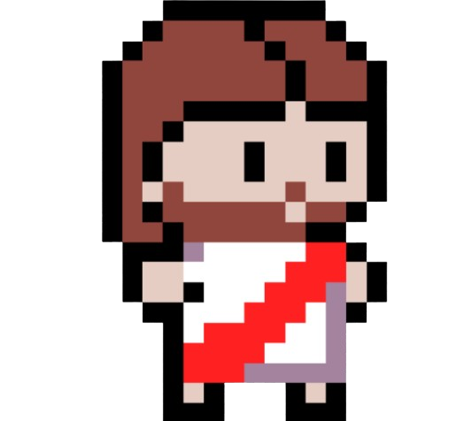
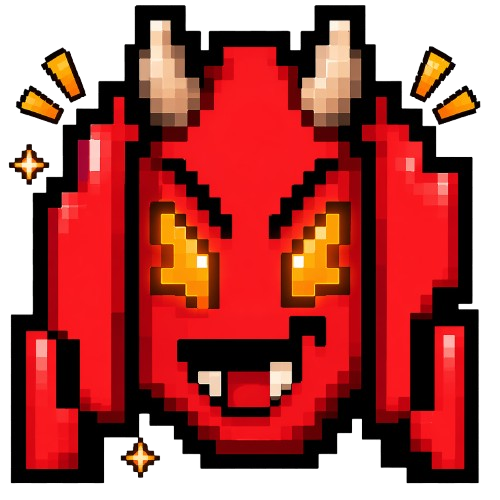
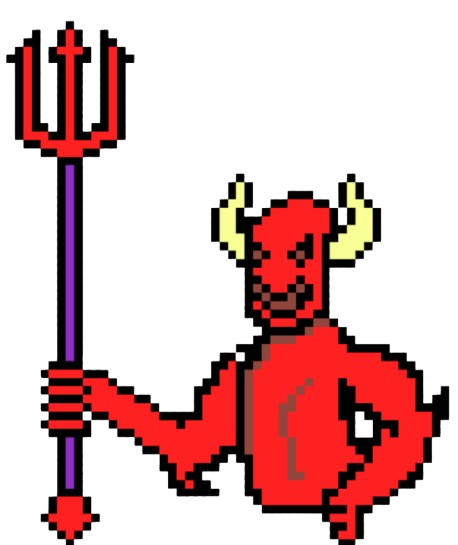

| Pertsonai Nagusia |
 |
Jolasaren pertsonai nagusia da, kontrolen bidez kontrolatuko duzuna. Salto egiteko gaitasuna du eta 3 bizitzarekin hasi egingo da. |
| Deabru Txikiak |
 |
Bidean zehar aurkituko dituzun etsaiak dira. Ikutzerakoan bizitza bat kenduko zaizu. Hauek horizontalean mugitzen dira eta ez dute hegan egiten. Paretetan errebotatu egiten dute. Ez dira bukatzen, nahiz eta bat hil 2 segunduro beste bat agertzen da. |
| Agure Jakintsua |

|
Bidean zehar aurkituko duzun agure bat da. Hau informazioa emango dizu eta mezua heman ondoren desagertu egingo da. |
| Deabru Nagusia |
 |
Jolasaren helburua deabru hau hiltzea da. Jolasaren azken atalean agertzen da. Honi Jotzerakoan proiektilak ateratzen ditu bere gorputzatik norabide guztietara eta mugitu egiten da denbora guztian. |